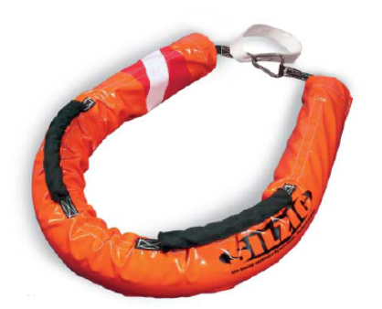
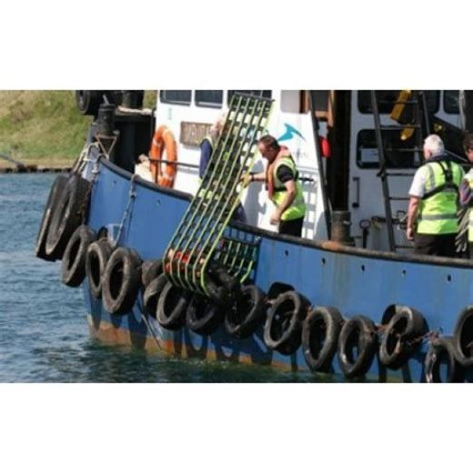
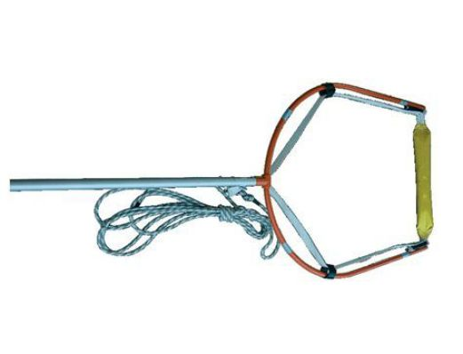

Repêchage homme a la mer du bord
Lorsque l'homme à la mer a été repéré, il est nécessaire de le ramener à bord. Si le navire n'est pas équipé de canot de sauvetage, plusieurs matériels peuvent être utilisés.
Bouée Silzig
La bouée couronne peut être utilisée pour le repêchage d'homme a la mer conscient.

Jason cradle
Le système jason cradle est dispositif de repêchage qui peut être utilisé le long du bord en cas d'homme a la mer inconscient.

bouée couronne
La bouée couronne peut être utilisée pour le repêchage d'homme a la mer conscient.
Gaffe de récupération
La gaffe de récupération permet de repêcher un homme à la mer inconscient.
